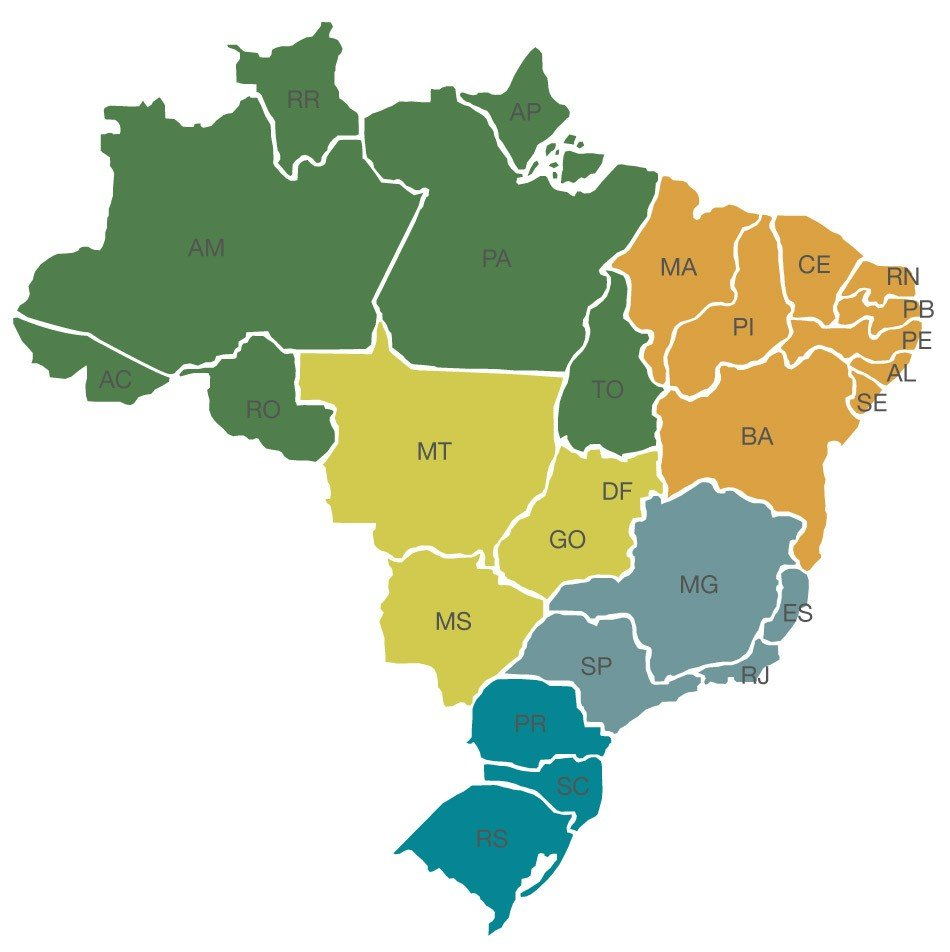

As regiões do Brasil são agrupamentos das unidades da federação em regiões com o propósito de ajudar as interpretações estatísticas, implantar sistemas de gestão de funções públicas de interesse comum ou orientar a aplicação de políticas públicas dos governos federal e estadual. Atualmente no Brasil, existem cinco regiões oficiais: Centro-Oeste, Nordeste, Norte, Sudeste e Sul.

As regiões, mesmo quando definidas por lei, não possuem personalidade jurídica própria, nem os cidadãos elegem representantes da região. Não há, portanto, qualquer tipo de autonomia política das regiões brasileiras como há em outros países.